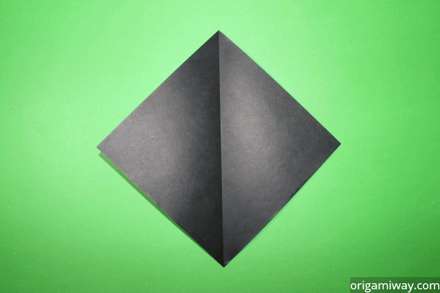
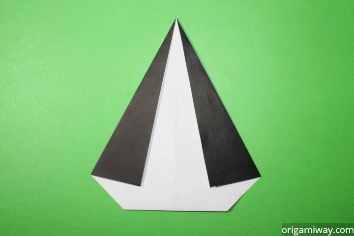
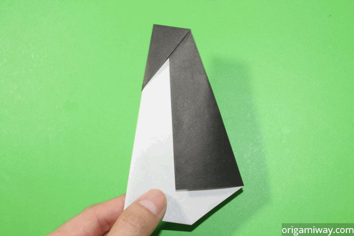

Origami Penguin Making
Learn how to make origami birds with these easy to follow instructions. It's a good place to begin to master the basic techniques, which you can then use in other origami bird projects. Historically, the paper birds symbolize hope and peace.
Step 1

Begin with a square piece of origami paper. If you're working with standard 8.5x11 paper, follow the provided instructions to transform it into a square. Alternatively, enhance your creativity with colorful Printable Origami Paper options.
Step 2
To establish a central guideline, fold the paper in half, and then gently unfold it, creating a clear reference point for your origami project. This crease will serve as a helpful reference throughout the folding process, ensuring precision in your artistic endeavor.
Step 3
Delicately lift the bottom corner and fold it upwards, following the illustrated demonstration. This precise maneuver is pivotal in shaping your origami creation and contributes to its overall aesthetic, so take your time and ensure an accurate fold.
Step 4
Transition to the next stage of your origami journey by carefully flipping the paper over. This simple yet pivotal action sets the foundation for the subsequent steps in the creative process, guiding you towards the final form of your intricate origami masterpiece.
Step 5
Fold the left and right sides inward, mirroring the visual guide, to continue shaping your origami masterpiece. This step contributes to the intricate structure of your creation, so take your time to ensure precision in your folds.
Step 6
Delicately fold the top point downward, as demonstrated, to shape the head of your origami creation. This meticulous fold serves as the foundation for the distinctive appearance of the head, adding character and charm to your masterpiece.
Step 7
Create a fold down the center by lifting the central crease upward and folding the sides backward. This particular fold is known as a "mountain fold." Executing this step meticulously is essential to shape your penguin origami, so take your time to ensure precision and symmetry.
Step 8
Delicately extend the beak outwards and proceed to flatten the back of the head, as demonstrated. This careful maneuver refines the shape of your origami creation, bringing the head to life with detail and character. Take your time to ensure a well-defined result